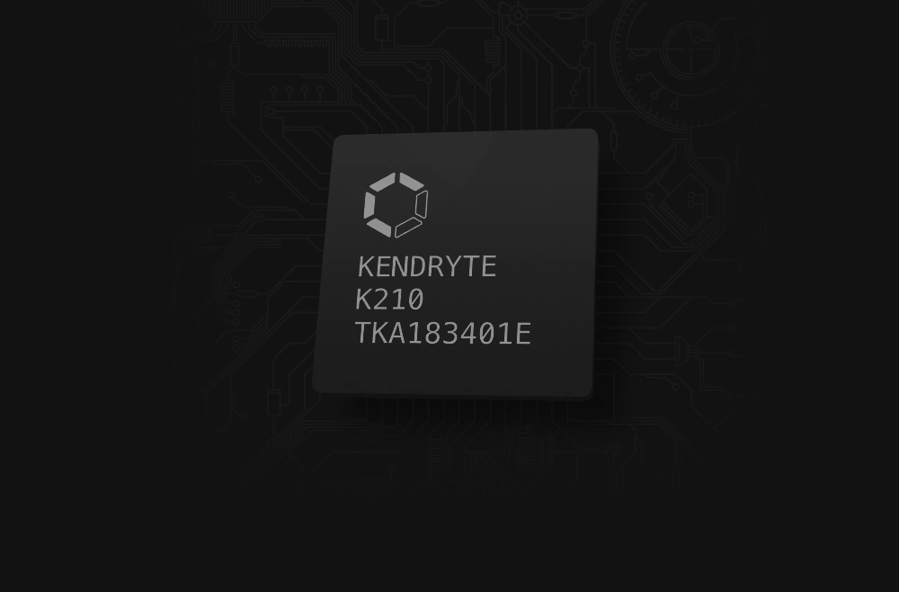
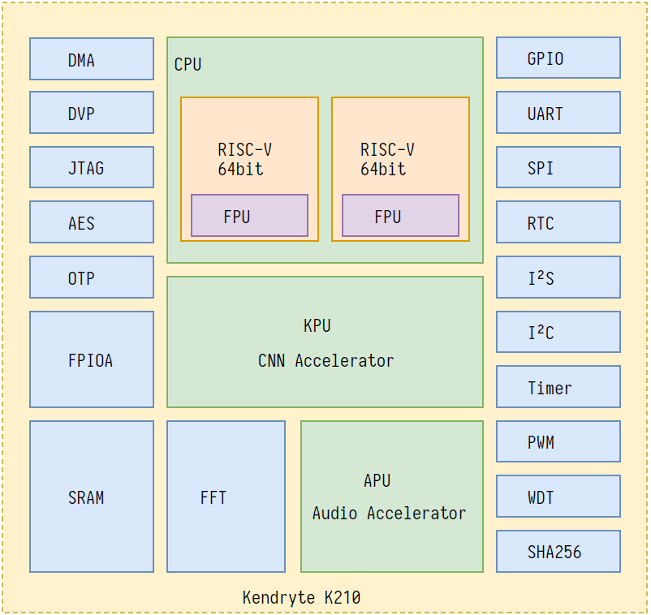
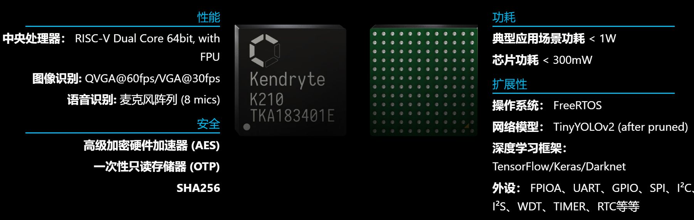

初步了解K210

K210简要概述#
Kendryte K210 是集成机器视觉与机器听觉能力的系统级芯片(SoC)。使用台积电(TSMC)超低功耗的28纳米先进制程，具有双核64位处理器，拥有较好的功耗性能，稳定性与可靠性。该方案力求零门槛开发，可在最短时效部署于用户的产品中，赋予产品人工智能。
Kendryte K210 定位于AI 与IoT 市场的SoC，同时是使用非常方便的MCU。
Kendryte 中文含义为勘智，而勘智取自勘物探智。这颗芯片主要应用领域为物联网领域，在物联网领域进行开发，因此为勘物；这颗芯片主要提供的是人工智能解决方案，在人工智能领域探索，因此为探智。
l 具备机器视觉能力
l 具备机器听觉能力
l 更好的低功耗视觉处理速度与准确率
l 具备卷积人工神经网络硬件加速器KPU，可高性能进行卷积人工神经网络运算
l TSMC 28nm 先进制程，温度范围-40°C 到125°C，稳定可靠
l 支持固件加密，难以使用普通方法破解
l 独特的可编程IO 阵列，使产品设计更加灵活
l 低电压，与相同处理能力的系统相比具有更低功耗
l 3.3V/1.8V 双电压支持，无需电平转换，节约成本
更多介绍可前往官网查看：勘智K210
K210系统架构#

K210 包含RISC-V 64 位双核CPU，每个核心内置独立FPU. K210 的核心功能是机器视觉与听觉，其包含用于计算卷积人工神经网络的KPU 与用于处理麦克风阵列输入的APU. 同时K210 具备快速傅里叶变换加速器，可以进行高性能复数FFT 计算。因此对于大多数机器学习算法，K210 具备高性能处理能力。
K210 内嵌AES 与SHA256 算法加速器，为用户提供基本安全功能。
K210 拥有高性能、低功耗的SRAM，以及功能强大的DMA，在数据吞吐能力方面性能优异。
K210 具备丰富的外设单元，分别是：DVP、JTAG、OTP、FPIOA、GPIO、UART、SPI、RTC、I²S、I²C、
WDT、Timer 与PWM，可满足海量应用场景。
